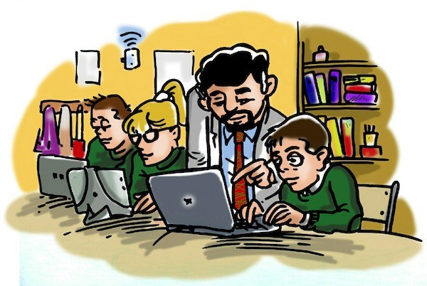
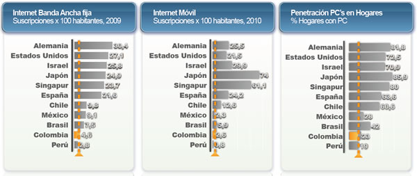
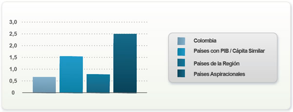
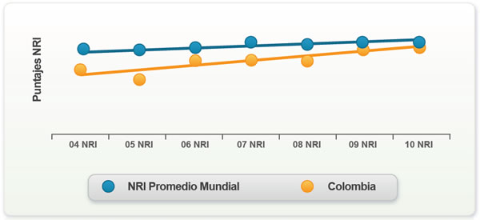
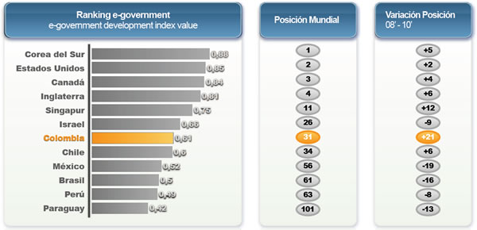

TIC

¿Qué Son?
Las tecnologías de la información y la comunicación (TIC) son todas aquellas herramientas y programas que tratan, administran, transmiten y comparten la información mediante soportes tecnológicos. La informática, Internet y las telecomunicaciones son las TIC más extendidas, aunque su crecimiento y evolución están haciendo que cada vez surjan cada vez más modelos.
¿Qué Tipos de TIC existen?
Las tecnologías de la información y la comunicación se pueden clasificar en tres categorías:
- Redes: La telefonía fija, la banda ancha, la telefonía móvil, las redes de televisión o las redes en el hogar son algunas de las redes de TIC.
- Terminales: Existen varios dispositivos o terminales que forman parte de las TIC. Estos son el ordenador, el navegador de Internet, los sistemas operativos para ordenadores, los teléfonos móviles, los televisores, los reproductores portátiles de audio y video o las consolas de juego.
- Servicios en las TIC: Las TIC ofrecen varios servicios a los consumidores. Los más importantes son el correo electrónico, la búsqueda de información, la banca online, el audio y música, la televisión y el cine, el comercio electrónico, e-administración y e-gobierno, la e-sanidad, la educación, los videojuegos y los servicios móviles.
Ventajas de las TIC.
Fácil acceso a la información en cualquier formato y de manera fácil y rápida.
- Instantaneidad: La velocidad con la que se transfiere la información.
- Inmaterialidad: La información se puede trasladar de forma inmediata a cualquier lugar y a múltiples usuarios.
- Interconexión: La unión de diferentes tecnologías que posibilitan la creación de nuevas herramientas.
- Interactividad: El intercambio de información entre usuarios y dispositivos.
- Alcance:Capacidad de impacto en diferentes áreas como la economía, la educación, la medicina, el gobierno, etc.
- Innovación: Todo el tiempo están creciendo y cambiando para crear nuevos medios de comunicación.
- Diversidad: Ejecutan más de una función por lo que sirven para diferentes propósitos.
- Automatización: Cada vez más las herramientas tienden a automatizar procesos para mejorar la productividad y los tiempos de ejecución.
Desventajas de las TIC.
No todo es positivo con las TIC. Entre otras cosas, han fomentado una dispersión de la información, desprovista de sistemas de catalogación y legitimación del conocimiento, lo cual se traduce en mayor grado de desorden del contenido (como ocurre con Internet) e incluso acceso prematuro al mismo, fomentando la ignorancia y la irresponsabilidad en el gran público, incapaz de discernir si las fuentes son confiables o no.
Asimismo, estas nuevas tecnologías han impulsado una enorme exposición de la vida íntima y personal, además de la obligación de una conexión permanente a las distintas comunidades virtuales que se han establecido, dando pie a conductas adictivas o poco saludables, y a nuevas formas de riesgo. El autismo cultural, el aislamiento social y la hiperestimulación infantil, así como los enormes riesgos a la privacidad, son algunos de los inconvenientes que más preocupan alrededor de las TICs actualmente.
El Papel de las TIC durante la Pandemia.
Según la Unesco, durante la pandemia, comprobaron un mayor uso y consumo de las tecnologías.
La Organización de las Naciones Unidas para la Educación, la Ciencia y la Cultura (Unesco) indica que las tecnologías de la información y la comunicación (TIC) están desempeñando un papel fundamental en la lucha mundial contra el nuevo coronavirus.
Según el ente, estas tecnologías permiten que, durante la pandemia, se pueda “compartir información para salvar vidas, desacreditar la información errónea, reforzar la aplicación del derecho fundamental a la información”.
Igualmente, contribuyen a “aprovechar el uso de los medios de comunicación de interés público, las TIC y los recursos educativos abiertos (REA) para el aprendizaje electrónico, y conectar a las personas
Tecnologías de Información:Por su parte, la Organización Panamericana de la Salud (OPS) explica que, ante una pandemia, los servicios de salud, principalmente los que son del primer nivel de atención, corren el riesgo de colapsar por una sobrecarga de consultas que podrían ser atendidas utilizando las tecnologías de información.
- En este caso, consideran que las TIC permiten una mayor equidad en el acceso a la atención médica oportuna, lo que facilita la evaluación, el diagnóstico y el tratamiento de los casos sospechosos y positivos de forma segura, minimizando el riesgo de transmisión.
Sobre la gestión de los servicios de salud, las tecnologías “representan una gran utilidad mejorando el costo-efectividad de los tratamientos y permitiendo la operación regular, y sin interrupciones de los servicios clínicos clave, tanto en la preparación como en el curso de la pandemia”.
- En cuanto a las oportunidades tecnológicas creadas en función de facilitar la atención sanitaria, según la OPS, destacan la creación de páginas web, tableros de información (dashboards), aplicaciones móviles, redes sociales, campus virtuales, servicio web de mensajes, foros, entre otros.
- También han surgido registros informatizados de enfermedades, las aplicaciones para registro de datos de proveedores y para interacción con los pacientes, los sistemas para prescripciones electrónicas y otras herramientas para telesalud.
Las TIC y la Educación:Según la Unesco, en tiempos de pandemia, comprobaron un mayor uso y consumo de las tecnologías, ofreciendo tanto oportunidades como riesgos, a la vez que brinda la posibilidad de ejercer una ciudadanía digital responsable.
Al respecto, explican que la tecnología está garantizando nuevas oportunidades para la participación, pues permite “expresarse, hacerse escuchar y ejercer el derecho a actuar por el bien común. Promueven una cultura participativa que fortalece el compromiso social, a través de diferentes plataformas y herramientas”.
En este sentido, cientos de iniciativas digitales han surgido para, a través de las TIC, darle continuidad a la enseñanza; tertulias digitales o maratones de encuentros virtuales gratuitos dirigidos a docentes y directores de centros de estudios y plataformas para realización de tareas, han sido algunas de las estrategias tecnológicas en función de la educación.
De acuerdo con el Banco de Desarrollo de América Latina, la experiencia interactiva en el uso de las tecnologías por parte de los estudiantes se ve reforzada por la retroalimentación inmediata que suelen brindar los programas de aprendizaje asistido por computadora.
Una tarea “casi imposible para un docente en un aula de clases”, pues esa retroalimentación” específica y con el objetivo de apoyar el proceso de aprendizaje, más que de evaluar y calificar a los alumnos, es muy beneficiosa”, consideraron.
Desinformación y Tecnologías:
La pandemia de la Covid-19 ha generado también un gran volumen de información falsa, “para dañar a una persona, grupo social, organización o país”. Ante este escenario, organizaciones, instituciones y empresas han creado, amparados en las TIC, una serie de herramientas que permiten frenar la desinformación sobre la pandemia.
En este sentido, destaca la Unesco que una defensa contra la desinformación es garantizar que todas las personas adquieran competencias mediática e informacional, pues las personas alfabetizadas en estos “medios e información evalúan críticamente la información con la que se involucran; piensan y verifican antes de usar o compartir información”.
La Unesco, por ejemplo, unió fuerzas con los miembros de la Alianza Global para la Alianza para la Alfabetización Mediática e Informacional (GAPMIL) para lanzar la Respuesta de la Alianza Mediática e Informacional (MIL) a Covid-19.
Un programa que incluye “una serie de seminarios web que cubren varios temas relacionados con MIL y la desinformación Covid-19”, así como la iniciativa “MIL CLICKS para aprender más sobre MIL en las redes sociales, y convertirse en un educador MIL”.
Asimismo, con el empleo de las tecnologías se estableció el “CoronaVirus Facts Alliance”, una iniciativa presentada por la International Fact-Checking Network, que une a cerca de 80 medios de 74 países para chequear y verificamos informaciones sobre la pandemia.
Economia durante la Pandemia
Escuela Covid-19
Colombia en el Contexto Internacional
Es importante entender en dónde está Colombia en el contexto internacional en diferentes indicadores relacionados con la tecnología, para así determinar en qué nos debemos concentrar para ser competitivos. Las TIC abren un enorme potencial de desarrollo y los países que mejor posicionados estén tienen la posibilidad de hacer el mejor provecho de las mismas.
Colombia tiene un importante rezago en penetración de Internet, así como en penetración de computadores frente a otros países de la región. Este rezago es aún mayor cuando se le compara con países desarrollados. La siguiente figura muestra la penetración de Internet de banda ancha fija, Internet móvil y de PCs en varios países desarrollados y de la región. Es claro que Colombia y los demás países de la región están bastante atrasados en éstos indicadores comparados con países desarrollados. Además, en el caso de los países latinoamericanos, hay varios que le llevan la delantera a Colombia, como es el caso de Chile, México y Brasil. Adicionalmente, la velocidad a la que la penetración está aumentando en algunos de éstos países es muy superior a aquella del caso Colombiano, por lo que no sólo estamos rezagados sino que lo estaremos aún más de continuar así.

El siguiente indicador de importancia es la inversión que se hace en el sector TIC como un porcentaje del PIB. La siguiente figura nos muestra que en el caso Colombiano, la inversión porcentual en TIC es inferior a la de otros países de la región (incluyendo Argentina, Brasil, Chile, Ecuador, México, Perú, Uruguay y Venezuela), países con PIB per cápita similar (Azerbaijan, Bosnia Herzegovina, República Dominicana, Ecuador, Namibia, Perú, Serbia y Suráfrica) y mucho menor a la de países desarrollados (Australia, Bélgica, Canadá, Francia, Alemania, Holanda, Corea del Sur e Inglaterra).

A pesar de ésta situación, hay también algunos aspectos positivos. Colombia ha mejorado su ranking en el Network Readiness Index a una velocidad superior al promedio mundial, como se ve a continuación.

Adicionalmente, Colombia es líder en Gobierno en Línea en Latinoamérica, donde ha ganado 21 puestos a nivel mundial en los últimos dos años.

De éstos indicadores comparativos entre Colombia y otros países podemos concluir que aunque se ha avanzado en algunos aspectos, aún queda mucho camino por recorrer. No sólo es importante mejorar, sino hacerlo a una velocidad superior a la que lo están haciendo otros países para poder aumentar nuestra competitividad y ser un participe importante de los nuevos mercados de servicios digitales.
Las MINTIC
¿Cúal es el Papel de las MINTIC ahora?